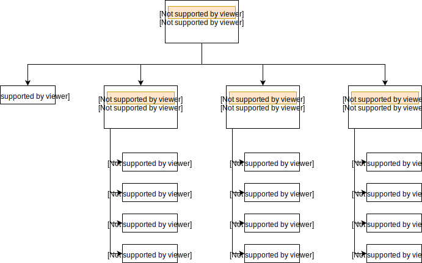
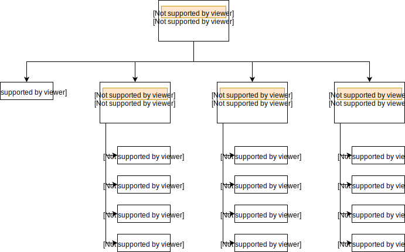

Packages
In questa sezione vedremo come suddividere l'applicazione in moduli distribuiti in Python packages. Inoltre, mostreremo come importare e utilizzare packages (siano essi personali o di terze parti) all'interno di un programma.
Organizzazione del codice
Di solito non archiviamo tutti i file in una stessa locazione del nostro computer. Utilizziamo invece una gerarchia di directory ben organizzata per un accesso più semplice.
File simili sono conservati in una stessa directory, ad esempio si possono conservare tutti i brani nella directory musica. Analogamente, Python ha package per directory, e moduli per file.
Poiché la nostra applicazione potrebbe contenere un elevato numero di moduli, decidiamo di raggruppare quelli simili in un unico package e moduli diversi in package diversi. Ciò renderà l'applicazione facile da gestire e concettualmente più chiara.
Procedendo per analogia, così come una directory può contenere al suo interno altre directory e file, anche un package Python può avere al suo interno altri package e moduli.
Una directory, affinché sia considerata un package dall'interprete Python, deve contenere al suo interno un file chiamato
Per facilitare la comprensione, proseguiamo la discussione introducendo un esempio. Supponiamo di stare sviluppando un gioco, allora una possibile organizzazione di package e moduli potrebbe essere la seguente.

__init__.py. Questo file può essere lasciato vuoto, in caso contrario conterrà al suo interno il codice di inizializzazione del package che lo contiene.Per facilitare la comprensione, proseguiamo la discussione introducendo un esempio. Supponiamo di stare sviluppando un gioco, allora una possibile organizzazione di package e moduli potrebbe essere la seguente.

Importare moduli da packages
Possiamo importare moduli da pacchetti usando l'operatore punto
..
Ad esempio, se si desidera importare il modulo start del package Level dell'esempio precedente, ciò può essere fatto mediante l'istruzione:
import Game.Level.start
A questo punto, se tale modulo contiene una funzione
select_difficulty, dovremo chiamarla utilizzando l'intero percorso che la individua:
Game.Level.start.select_difficulty()
Se questo costrutto appare troppo lungo, possiamo importare il modulo senza il prefisso del package come segue:
from Game.Level import start
di modo che adesso la chiamata alla funzione risulterà essere
start.select_difficulty()
Un altro modo tramite cui importare solo la funzione richiesta (o la classe o la variabile) da un modulo all'interno di un package è il seguente:
from Game.Level.start import select_difficulty
In tal caso, potremo chiamare direttamente la funzione come:
select_difficulty()
Questo metodo di importare funzioni (o classi o variabili) è però soggetto a possibili conflitti tra identificatori identici che si riferiscono però a moduli diversi (ad esempio i packages
Sound e Level contengono entrambi un modulo load).
PyPI
Il Python Package Index, detto anche PyPI, è una piattaforma su cui è possibile pubblicare e scaricare gratuitamente una vasta gamma di Python packages. Grazie al notevole sforzo della comunità Python, potremo in particolare usufruire di progetti che ci consentiranno un IoC (Inversion of Control) sul nostro applicativo, ovvero, in altri termini, ci eviteranno di re-inventare la ruota. Tra i diversi progetti che è possibile scaricare, vi sono ad esempio:
- numpy: consente la realizzazione di applicativi scientifici;
- matplotlib: rende possibile il plot di funzioni matematiche;
- tensorflow: permette di implementare algoritmi di Machine Learning;
- Django: utile per sviluppare applicativi web;
- mkdocs: consente la realizzazione di guide come questo sito che state consultando.
~
|__virtualenvs
|__myvenv
|__Include
|__Lib
|__Scripts
|__pyvenv.cfg
|__src
|__main.py
Per scaricare i package numpy e matplotlib all'interno del nostro ambiente virtuale, dovremo attivare l'ambiente virtuale e poi sfruttare l'utility
pip messa a disposizione da Python:
(myvenv) src > pip install numpy
(myvenv) src > pip install matplotlib
Come conseguenza, i package verranno scaricati nella directory
site-packages dell'ambiente virtuale:
~
|__virtualenvs
|__myvenv
|__Include
|__Lib
|__python3.6
|__site-packages
|__numpy
|__matplotlib
|__Scripts
|__pyvenv.cfg
|__src
|__main.py
A questo punto potremo importare i moduli contenuti nei progetti numpy e matplotlib all'interno del nostro file
main.py. In particolare, seguendo le istruzioni contenute nella documentazione ufficiale di matplotlib, potremo plottare la funzione seno inserendo nel nostro file main.py le seguenti istruzioni:
import matplotlib
import matplotlib.pyplot as plt
import numpy as np
# Data for plotting
x = np.arange(0, 2*np.pi, 0.01)
y = np.sin(x)
fig, ax = plt.subplots()
ax.plot(x, y)
ax.set(xlabel='x axis', ylabel='sin(x)',
title='Plot')
ax.grid()
plt.show()
ed eseguendolo come al solito. Per consentire la visualizzazione dell'output, riportiamo lo stesso script nella seguente shell interattiva. Lanciando il programma potrete visualizzare il plot della funzione seno.
import matplotlib
import matplotlib.pyplot as plt
import numpy as np
# Data for plotting
x = np.arange(0, 2*np.pi, 0.01)
y = np.sin(x)
fig, ax = plt.subplots()
ax.plot(x, y)
ax.set(xlabel='x axis', ylabel='sin(x)',
title='Plot')
ax.grid()
plt.show()